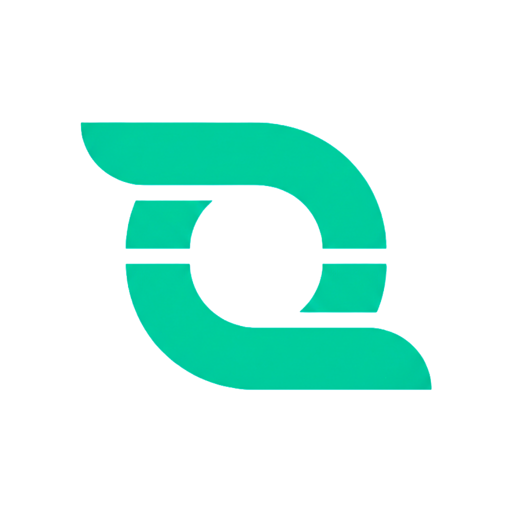

Hi, I'm
Karanbir Singh
Software Engineer building reliable backend and distributed systems, automation platforms, and real-time ML applications. MS Computer Science student at Stony Brook University, graduating May 2026.
A Bit About Myself
I'm a Software Engineer and CS graduate student at Stony Brook University, passionate about building reliable backend systems, distributed platforms, and automation tools. I enjoy turning complex problems into clean, well-tested solutions.
My experience spans building REST APIs with Spring Boot and FastAPI, crafting AI-powered automation systems, and developing ML models for real-world applications. I care deeply about code quality, observability, fault tolerance, and iterative development.
I'm currently open to full-time Software Engineering roles starting May 2026 — feel free to reach out or download my resume.
Academic Background

Professional Journey

Featured Work
A collection of things I've built — from distributed backend systems to automation pipelines and real-time ML applications.
Fault-tolerant medical resource availability platform built with Spring Boot, Kafka, gRPC, RAFT, PostgreSQL, Redis, Docker, and Kubernetes. Maintains write availability through majority quorum, streams real-time updates, and issues zero-availability alerts.
Turns plain English into executable API workflows. Local Llama 3 reasons over tasks, outputs validated JSON payloads, and calls external REST APIs end-to-end with zero cloud dependency.
Production-grade ticket management API built with Java and Spring Boot. Fully observable via Micrometer, Prometheus, and Grafana, with 80%+ test coverage using JUnit 5 and Mockito, plus Swagger documentation.
Paste a URL, get a ready-to-present slideshow. Reverse-engineered undocumented API endpoints via browser network inspection to automate slide generation from any public webpage.
Real-time driver safety system unifying a Keras CNN with MediaPipe Pose and Hand tracking across 3 concurrent detection pipelines, flagging fatigue, posture, and hand-position risks with 95% classification accuracy.
Full-stack plant disease detection web app using a TensorFlow CNN served via Streamlit, classifying 38 conditions across 14 crops at 97.38% accuracy on 87,000+ images.
Published Work
Research writing connected to applied AI, agriculture, and computer vision.
Co-authored a chapter published in Optimizing AI Applications for Sustainable Agriculture, documenting findings from the AgroDoc research project. The chapter covers CNNs, transfer learning, data augmentation, IoT integration, and precision agriculture applications for plant disease detection.
Let's Connect
Have a project in mind or want to collaborate? I'd love to hear from you.
I'm currently open to full-time software engineering roles starting May 2026. Feel free to reach out.